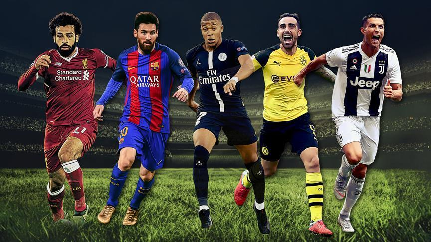

European football is one of the oldest sports in the world dating back to the 15th century, a good 300 years before American football. European football has the biggest fan base of any other sport, let alone American football. Many people argue over which sport should get the title of "football". Is can be a heated debate especially since Europeans have had to hear their beloved game being referred to as "soccer." However, European football deserves it's well earned nickname, "the beautiful game."
European football has a rich history and tradition that goes back over hundreds of years. The oldest clubs in Europe have built a culture around the sport that has encapsulated the fans. This rich heritage makes the wins and losses feel personal for supporters, creating an emotional bond with their teams. The team rivalries in Europe are notorious for being colourful and passionate, adding another exciting aspect to the entertainment.
In conclusion, European football embodies a rich history, a vibrant community, and a style of play that is celebrated worldwide. "The beautiful game," provides the excitement that draw millions of fans to stadiums and screens worldwide. European football deserves recognition not just for its name, but for the joy and connection it brings to people everywhere.